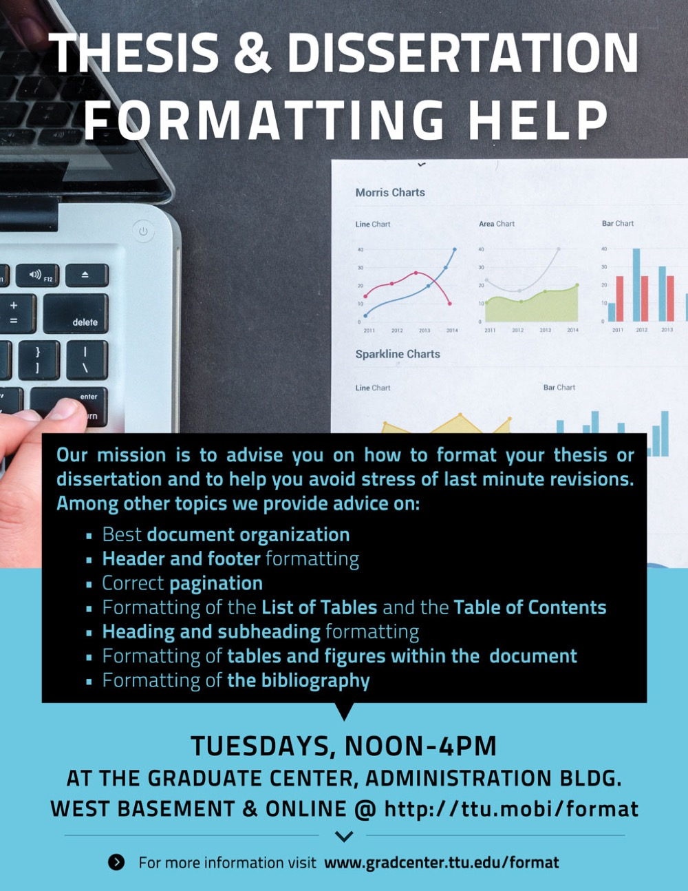
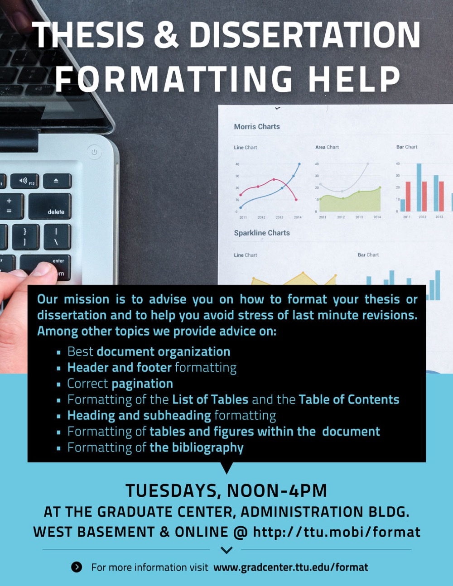

Jacek Jońca-Jasiński, Ph.D.
Assistant Vice President for Graduate Studies & Research at Adams State University
Chairperson of the Institutional Review Board
Founder of the Graduate Center &
the Office of Postdoctoral Affairs
at Texas Tech University
Power of Good Questions
What will the future thinking look like?
What skills will the future demand?
How can we teach this future-oriented thinking?
How can we help develop skills of the future?
"The American higher education system of today is like the American automobile industry of the 1970s."
"First, it offers a remarkable number of choices of the best products in the world at a reasonable cost. Second, it is not doing much about challenges that will require major adjustments if, 20 years from now, it wants to be able to make that same claim of superior choices at a reasonable cost."
Lamar Alexander, United State Senate, Committee on Health, Education, Labor and Pensions. Press release, September 9, 2013.Futurism
the study of the possible, probable, and preferrable futures without making predictions. Identify and follow trends.
Research with Purpose
Research driven by the institutional mission
Research driven by the institutional vision & markets
Research driven by what we excel at
Research with future in mind
Adams State University
-
Achieved majority-graduate status
-
Effectively advocated for Graduate Studies to be represented in the President's Cabinet
-
Reversed a decade of leadership vacuum and non-compliance on the Institutional Review Board

Adams State University - continued
-
First year almost doubled the incoming class from 368 in Fall 2022 to 608 for Fall 2023
-
Initiated two new graduate programs (+20%) and five graduate certificates
-
$20 million in tuition revenue per year
Past: Texas Tech Graduate Center
“I enjoy my work a lot. A lot of my stress comes from loneliness.” "When students don’t feel a sense of belonging within the academic community—particularly with fellow students and faculty advisors—their mental health and academic work may suffer.”
-
Nexus for graduate affairs, place where you belong
-
Interdisciplinary collaborations, innovation
-
Grew from zero visits in 2013 to 32000 in 2018
-
Grew programming from 4 to over 200 events a year


What did we do at the Graduate Center to address needs & fears of our students?
( select examples )
Developing research skills and capacity building
-
Statistical Consulting Service
-
Research Assistance Service
-
Institutional Review Board Proposal Writing Assistance


Developing research skills and capacity building
-
Low-cost Research Poster Printing Service
-
Research Strategies Training Program
-
Research Computing Lab
-
Graduate Student Writing Center

 

Career Development
“The largest source of anxiety for me is my job outlook.
It is tremendously uncertain and thus fear-inducing.”
-
At least one in-house hosted professional or career development event each week
-
Graduate Career Center Outpost
-
Free LinkedIn Headshot Service


Connectedness sparks Interdisciplinary collaborations
“I live on my own for the first time and it is very lonely. I wish there were more exciting ways to meet other grad students.”
-
Social events hosted at least twice a month
-
Graduate Student Government
-
Graduate groups (Dissertation writing, Walking Group, Peer Support Group, and more)
Texas A&M University Corpus Christi
-
Optimized, simplified, and automated graduate admissions
-
Grew new graduate applications by 25%
-
Implemented data driven proceses and decreased time-to-decision by 12%